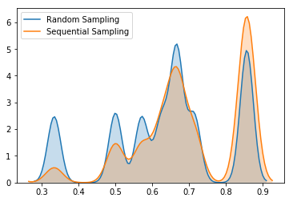

Sampling¶
In financial machine learning, samples are not independent. The most part of traditional machine learning algorithms assume that samples are i.i.d, in case of financial machine learning samples are neither identically distributed not indepedent. In this section we will tackle the problem of samples dependency. As you remember, we mostly label our datasets using triple-barrier method. Each label in triple-barrier event has label index and label endtime (t1) which corresponds to time when one of barriers was touched.
Sample Uniqueness¶
Let’s look at example of 3 samples: A, B, C.
Imagine that:
A was generated at \(t_1\) and triggered on \(t_8\)
B was generated at \(t_3\) and triggered on \(t_6\)
C was generated on \(t_7\) and triggered on \(t_9\)
In this case we see that A used information about returns on \([t_1,t_8]\) to generate label-endtime which overlaps with \([t_3, t_6]\) which was used by B, however C didn’t use any returns information which was used by to label other samples. Here we would like to introduce the concept of concurrency.
We say that labels \(y_i\) and \(y_j\) are concurrent at \(t\) if they are a function of at least one common return at \(r_{t-1,t}\)
In terms of concurrency label C is the most ‘pure’ as it doesn’t use any piece of information from other labels, while A is the ‘dirtiest’ as it uses information from both B and C. By understanding average label uniqueness you can measure how ‘pure’ your dataset is based on concurrency of labels. We can measure average label uniqueness using get_av_uniqueness_from_triple_barrier function from mlfinlab package.
This function is the orchestrator to derive average sample uniqueness from a dateset labeled by the triple barrier method.
-
get_av_uniqueness_from_triple_barrier(triple_barrier_events, close_series, num_threads)¶ - Parameters
triple_barrier_events – (data frame) of events from labeling.get_events()
close_series – (pd.Series) close prices.
num_threads – (int) The number of threads concurrently used by the function.
- Returns
(pd.Series) average uniqueness over event’s lifespan for each index in triple_barrier_events
An example of calculating average uniqueness given that we have already found our barrier events can be seen below:
import pandas as pd
import numpy as np
from mlfinlab.sampling.concurrent import get_av_uniqueness_from_triple_barrier
barrier_events = pd.read_csv('FILE_PATH', index_col=0, parse_dates=[0,2])
close_prices = pd.read_csv('FILE_PATH', index_col=0, parse_dates=[0,2])
av_unique = get_av_uniqueness_from_triple_barrier(barrier_events, close_prices.close,
num_threads=3)
We would like to build our model in such a way that it takes into account labels concurrency. In order to do that we need to look at the bootstrapping algorithm of Random Forest.
Sequential Bootstrapping¶
The key power of ensemble learning techniques is bagging (which is bootstrapping with replacement). The key idea behind bagging is to randomly choose samples for each decision tree. In this case trees become diverse and by averaging predictions of diverse tress built on randomly selected samples and random subset of features data scientists make the algorithm much less prone to overfit.
However, in our case we would not only like to randomly choose samples but also choose samples which are unique and non-concurrent. But how can we solve this problem? Here comes Sequential Bootstrapping algorithm.
The key idea behind Sequential Bootstrapping is to select samples in such a way that on each iteration we maximize average uniqueness of selected subsamples.
Implementation¶
The core functions behind Sequential Bootstrapping are implemented in mlfinlab and can be seen below:
Snippet 4.3, page 65, Build an Indicator Matrix
Get indicator matrix. The book implementation uses bar_index as input, however there is no explanation how to form it.
We decided that using triple_barrier_events and price bars by analogy with concurrency is the best option.
-
get_ind_matrix(triple_barrier_events, price_bars)¶ - Parameters
triple_barrier_events – (pd.DataFrame): triple barrier events from labeling.get_events
price_bars – (pd.DataFrame): price bars which were used to form triple barrier events
- Returns
(np.array) indicator binary matrix indicating what (price) bars influence the label for each observation
Snippet 4.4. page 65, Compute Average Uniqueness
Average uniqueness from indicator matrix
-
get_ind_mat_average_uniqueness(ind_mat)¶ - Parameters
ind_mat – (np.matrix) indicator binary matrix
- Returns
(float) average uniqueness
An adaption of Snippet 4.4. page 65, which returns the indicator matrix element uniqueness.
-
get_ind_mat_label_uniqueness(ind_mat)¶ - Parameters
ind_mat – (np.matrix) indicator binary matrix
- Returns
(np.matrix) element uniqueness
Snippet 4.5, Snippet 4.6, page 65, Return Sample from Sequential Bootstrap
Generate a sample via sequential bootstrap.
Note: Moved from pd.DataFrame to np.matrix for performance increase
-
seq_bootstrap(ind_mat, sample_length=None, warmup_samples=None, compare=False, verbose=False, random_state=np.random.RandomState())¶ - Parameters
ind_mat – (data frame) indicator matrix from triple barrier events
sample_length – (int) Length of bootstrapped sample
warmup_samples – (list) list of previously drawn samples
compare – (boolean) flag to print standard bootstrap uniqueness vs sequential bootstrap uniqueness
verbose – (boolean) flag to print updated probabilities on each step
random_state – (np.random.RandomState) random state
- Returns
(array) of bootstrapped samples indexes
Example¶
An example of Sequential Bootstrap using a a toy example from the book can be seen below.
Consider a set of labels \(\left\{y_i\right\}_{i=0,1,2}\) where:
label \(y_0\) is a function of return \(r_{0,2}\)
label \(y_1\) is a function of return \(r_{2,3}\)
label \(y_2\) is a function of return \(r_{4,5}\)
The first thing we need to do is to build and indicator matrix. Columns of this matrix correspond to samples and rows correspond to price returns timestamps which were used during samples labelling. In our case indicator matrix is:
ind_mat = pd.DataFrame(index = range(0,6), columns=range(0,3))
ind_mat.loc[:, 0] = [1, 1, 1, 0, 0, 0]
ind_mat.loc[:, 1] = [0, 0, 1, 1, 0, 0]
ind_mat.loc[:, 2] = [0, 0, 0, 0, 1, 1]
One can use get_ind_matrix method from mlfinlab to build indicator matrix from triple-barrier events.
triple_barrier_ind_mat = get_ind_matrix(barrier_events)
We can get average label uniqueness on indicator matrix using get_ind_mat_average_uniqueness function from mlfinlab.
ind_mat_uniqueness = get_ind_mat_average_uniqueness(triple_barrier_ind_mat)
Let’s get the first sample average uniqueness (we need to filter out zeros to get unbiased result).
first_sample = ind_mat_uniqueness[0]
first_sample[first_sample > 0].mean()
>> 0.26886446886446885
av_unique.iloc[0]
>> tW 0.238776
As you can see it is quite close to values generated by get_av_uniqueness_from_triple_barrier function call.
Let’s move back to our example. In Sequential Bootstrapping algorithm we start with an empty array of samples (\(\phi\)) and loop through all samples to get the probability of chosing the sample based on average uniqueness of reduced indicator matrix constructed from [previously chosen columns] + sample
phi = []
while length(phi) < number of samples to bootstrap:
average_uniqueness_array = []
for sample in samples:
previous_columns = phi
ind_mat_reduced = ind_mat[previous_columns + i]
average_uniqueness_array[sample] = get_ind_mat_average_uniqueness(ind_mat_reduced)
// normalise so that probabilities sum up to 1
probability_array = average_uniqueness_array / sum(average_uniqueness_array)
chosen_sample = random_choice(samples, probability = probability_array)
phi.append(chosen_sample)
For peformance increase we optimized and parallesied for-loop using numba, which corresponds to bootstrap_loop_run function.
Not let’s finish the example:
To be as close to mlfinlab implementation let’s convert ind_mat to numpy matrix
ind_mat = ind_mat.values
1st iteration:
On the first step all labels will have equal probalities as average uniqueness of matrix with 1 column is 1. Say we have chosen 1 on the first step
2nd iteration:
phi = [1] # Sample chosen from the 2st step
uniqueness_array = np.array([None, None, None])
for i in range(0, 3):
ind_mat_reduced = ind_mat[:, phi + [i]]
label_uniqueness = get_ind_mat_average_uniqueness(ind_mat_reduced)[-1]
# The last value corresponds to appended i
uniqueness_array[i] = (label_uniqueness[label_uniqueness > 0].mean())
prob_array = uniqueness_array / sum(uniqueness_array)
prob_array
>> array([0.35714285714285715, 0.21428571428571427, 0.42857142857142855],
dtype=object)
Probably the second chosen feature will be 2 (prob_array[2] = 0.42857 which is the largest probability). As you can see up till now the algorithm has chosen two the least concurrent labels (1 and 2)
3rd iteration:
phi = [1,2]
uniqueness_array = np.array([None, None, None])
for i in range(0, 3):
ind_mat_reduced = ind_mat[:, phi + [i]]
label_uniqueness = get_ind_mat_average_uniqueness(ind_mat_reduced)[-1]
uniqueness_array[i] = (label_uniqueness[label_uniqueness > 0].mean())
prob_array = uniqueness_array / sum(uniqueness_array)
prob_array
>> array([0.45454545454545453, 0.2727272727272727, 0.2727272727272727],
dtype=object)
Sequential Bootstrapping tries to minimise the probability of repeated samples so as you can see the most probable sample would be 0 with 1 and 2 already selected.
4th iteration:
phi = [1, 2, 0]
uniqueness_array = np.array([None, None, None])
for i in range(0, 3):
ind_mat_reduced = ind_mat[:, phi + [i]]
label_uniqueness = get_ind_mat_average_uniqueness(ind_mat_reduced)[-1]
uniqueness_array[i] = (label_uniqueness[label_uniqueness > 0].mean())
prob_array = uniqueness_array / sum(uniqueness_array)
prob_array
>> array([0.32653061224489793, 0.3061224489795918, 0.36734693877551017],
dtype=object)
The most probable sample would be 2 in this case
After 4 steps of sequential bootstrapping our drawn samples are [1,2,0,2]
Let’s see how this example is solved by mlfinlab implementation. To reproduce that:
we need to set warmup to [1], which corresponds to phi = [1] on the first step
verbose = True to print updated probabilities
samples = seq_bootstrap(ind_mat, sample_length=4, warmup_samples=[1], verbose=True)
>> [0.33333333 0.33333333 0.33333333]
>> [0.35714286 0.21428571 0.42857143]
>> [0.45454545 0.27272727 0.27272727]
>> [0.32653061 0.30612245 0.36734694]
samples
>> [1, 2, 0, 2]
As you can see the first 2 iterations of algorithm yield the same probabilities, however sometimes the algorithm randomly chooses not the 2 sample on 2nd iteration that is why further probabilities are different from the example above. However, if you repeat the process several times you’ll see that on average drawn sample equal to the one from the example
Monte-Carlo Experiment¶
Let’s see how sequential bootstrapping increases average label uniqueness on this example by generating 3 samples using sequential bootstrapping and 3 samples using standard random choise, repeat the experiment 10000 times and record corresponding label uniqueness in each experiment
standard_unq_array = np.zeros(10000) * np.nan # Array of random sampling uniqueness
seq_unq_array = np.zeros(10000) * np.nan # Array of Sequential Bootstapping uniqueness
for i in range(0, 10000):
bootstrapped_samples = seq_bootstrap(ind_mat, sample_length=3)
random_samples = np.random.choice(ind_mat.shape[1], size=3)
random_unq = get_ind_mat_average_uniqueness(ind_mat[:, random_samples])
random_unq_mean = random_unq[random_unq > 0].mean()
sequential_unq = get_ind_mat_average_uniqueness(ind_mat[:, bootstrapped_samples])
sequential_unq_mean = sequential_unq[sequential_unq > 0].mean()
standard_unq_array[i] = random_unq_mean
seq_unq_array[i] = sequential_unq_mean
KDE plots of label uniqueness support the fact that sequential bootstrapping gives higher average label uniqueness
{kind=link}
We can compare average label uniqueness using sequential bootstrap vs label uniqueness using standard random sampling by setting compare parameter to True. We have massively increased the performance of Sequential Bootstrapping which was described in the book. For comparison generating 50 samples from 8000 barrier-events would take 3 days, we have reduced time to 10-12 seconds which decreases by increasing number of CPUs.
Let’s apply sequential bootstrapping to our full data set and draw 50 samples:
Standard uniqueness: 0.9465875370919882
Sequential uniqueness: 0.9913169319826338
Sometimes you would see that standard bootstrapping gives higher uniqueness, however as it was shown in Monte-Carlo example, on average Sequential Bootstrapping algorithm has higher average uniqueness.
Sample Weights¶
mlfinlab supports two methods of applying sample weights. The first is weighting an observation based on its given return as well as average uniqueness. The second is weighting an observation based on a time decay.
By Returns and Average Uniqueness¶
The following function utilizes a samples average uniqueness and its return to compute sample weights:
-
get_weights_by_return(triple_barrier_events, close_series, num_threads=5)¶ - Parameters
triple_barrier_events – (data frame) of events from labeling.get_events()
close_series – (pd.Series) close prices
num_threads – (int) the number of threads concurrently used by the function.
- Returns
(pd.Series) of sample weights based on number return and concurrency
This function can be utilized as shown below assuming we have already found our barrier events
import pandas as pd
import numpy as np
from mlfinlab.sampling.attribution import get_weights_by_return
barrier_events = pd.read_csv('FILE_PATH', index_col=0, parse_dates=[0,2])
close_prices = pd.read_csv('FILE_PATH', index_col=0, parse_dates=[0,2])
sample_weights = get_weights_by_return(barrier_events, close_prices.close,
num_threads=3)
By Time Decay¶
The following function assigns sample weights using a time decay factor
-
get_weights_by_time_decay(triple_barrier_events, close_series, num_threads=5, decay=1)¶ - Parameters
triple_barrier_events – (data frame) of events from labeling.get_events()
close_series – (pd.Series) close prices
num_threads – (int) the number of threads concurrently used by the function.
decay – (int) decay factor - decay = 1 means there is no time decay - 0 < decay < 1 means that weights decay linearly over time, but every observation still receives a strictly positive weight, regadless of how old - decay = 0 means that weights converge linearly to zero, as they become older - decay < 0 means that the oldes portion c of the observations receive zero weight (i.e they are erased from memory)
This function can be utilized as shown below assuming we have already found our barrier events
import pandas as pd
import numpy as np
from mlfinlab.sampling.attribution import get_weights_by_time_decay
barrier_events = pd.read_csv('FILE_PATH', index_col=0, parse_dates=[0,2])
close_prices = pd.read_csv('FILE_PATH', index_col=0, parse_dates=[0,2])
sample_weights = get_weights_by_time_decay(barrier_events, close_prices.close,
num_threads=3, decay=0.4)